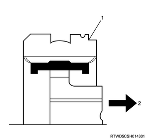
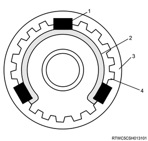
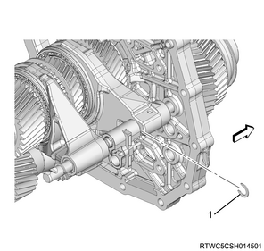

Transmission reassembly (MUX)
1. Snap ring installation
1. Install the snap ring to the intermediate plate using a snap ring pliers.
Note
- Hold the snap ring in an open condition with the snap ring pliers.
- After installing the input shaft, install the snap ring to the intermediate plate.
Caution
- Do not reuse the snap ring.
2. 5th gear installation
1. Install the needle bearing to the input shaft.
Note
- Install the two-piece type needle bearings.
2. Apply the oil to the 5th gear.
Note
- Apply the recommended lubricating oil to the gear inner surface.
3. Install the 5th gear to the input shaft.
3. 5th synchronizer assembly reassembly
1. Assemble the 5th synchronizer assembly.
Note
- Assemble the sleeve groove and clutch hub boss section so that they are on the 5th gear side.
- Confirm that the clutch hub and sleeve slide smoothly.

- Sleeve groove
- 5th gear side
Note
- Confirm that the insert is installed to the groove of the clutch hub correctly.
- Confirm that the insert spring is installed to the insert correctly.
- Set the insert spring in such a way that the openings of the spring face the different directions.

- Insert
- Insert spring
- Sleeve
- Clutch hub
4. 5th synchronizer assembly installation
1. Install the 5th synchronizer assembly to the main shaft.
Note
- Install the 5th synchronizer assembly and 5th block ring.
2. Select the snap ring.
Note
- Select the thickest snap ring that can be assembled.
3. Install the snap ring to the main shaft.
Note
- Install a new snap ring.
Caution
- Do not reuse the snap ring.
| Snap ring thickness | Identification color |
| ： 1.95 mm { 0.077 in } | Colorless |
| ： 2.10 mm { 0.083 in } | Yellow |
- Snap ring
5. Counter shaft assembly installation
1. Install the counter middle roller bearing to the counter shaft.
Note
- Install the counter middle roller bearing outer race.
2. Install the counter shaft assembly to the intermediate plate.
6. 5th counter gear installation
1. Apply the oil to the 5th counter gear.
Note
- Apply the recommended lubricating oil to the gear inner surface.
2. Install the 5th counter gear to the counter shaft.
Note
- After installing, verify that the counter middle roller bearing outer race moves only in the direction of the arrow.
- Counter middle roller bearing outer race
7. 3rd counter gear installation
1. Apply the oil to the 3rd counter gear.
Note
- Apply the recommended lubricating oil to the gear inner surface.
2. Install the 3rd counter gear to the counter shaft.
3. Install the needle bearing to the input shaft.
8. 3rd - 4th synchronizer assembly reassembly
1. Assemble the 3rd - 4th synchronizer assembly.
Note
- Assemble the sleeve groove and clutch hub boss section so that they are on the 3rd gear side.
- Confirm that the clutch hub and sleeve slide smoothly.
- Sleeve groove
- 3rd gear side
Note
- Confirm that the insert is installed to the groove of the clutch hub correctly.
- Confirm that the insert spring is installed to the insert correctly.
- Set the insert spring in such a way that the openings of the spring face the different directions.
- Insert
- Insert spring
- Sleeve
- Clutch hub
9. 3rd gear installation
1. Apply the oil to the 3rd gear.
Note
- Apply the recommended lubricating oil to the gear inner surface.
2. Install the 3rd gear to the input shaft.
10. 3rd - 4th synchronizer assembly installation
1. Install the 3rd - 4th block ring to the 3rd - 4th synchronizer assembly.
Note
- Install the block ring at the 3rd side.
2. Install the 3rd - 4th synchronizer assembly to the main shaft.
3. Select the snap ring.
Note
- Select the thickest snap ring that can be assembled.
4. Install the snap ring to the main shaft.
Note
- Install a new snap ring.
Caution
- Do not reuse the snap ring.
| Snap ring thickness | Identification color |
| ： 1.9 mm { 0.075 in } | Colorless |
| ： 2.1 mm { 0.083 in } | Yellow |
| ： 2.3 mm { 0.091 in } | Pink |
- Snap ring
11. Plate spring installation
1. Install the plate spring to the 3rd - 4th synchronizer assembly.
Note
- Face the concaved side toward the transmission rear side.
- Rear side of transmission
- Concaved tab
12. 3rd - 4th block ring installation
1. Install the 3rd - 4th block ring to the 3rd - 4th synchronizer assembly.
Note
- Install the block ring at the output shaft side.
13. Output counter gear installation
1. Apply the oil to the output counter gear.
Note
- Apply the recommended lubricating oil to the gear inner surface.
2. Select the snap ring.
Note
- Select the thickest snap ring that can be assembled.
3. Install the snap ring to the counter shaft assembly.
Note
- Install a new snap ring to the counter shaft assembly.
Caution
- Do not reuse the snap ring.
| Snap ring thickness | Identification color |
| ： 2.3 mm { 0.091 in } | Pink |
| ： 2.5 mm { 0.098 in } | White |
| ： 2.7 mm { 0.106 in } | Green |
- Snap ring
14. Pilot bearing spacer installation
1. Install the pilot bearing spacer to the input shaft.
15. Pilot bearing installation
1. Apply the grease to the pilot bearing.
Note
- Apply BESCO L-2 grease or equivalent.
2. Install the pilot bearing to the input shaft.
16. Output shaft installation
1. Install the output shaft to the input shaft.
17. 3rd - 4th shift arm installation
1. Install the 3rd - 4th shift arm to the 3rd - 4th and 5th shift rod.
18. 5th - reverse shift block installation
1. Install the 5th reverse shift block to the 3rd - 4th and 5th shift rod.
19. 5th shift arm installation
1. Install the 5th shift arm to the sleeve.
20. 3rd - 4th and 5th shift rod installation
1. Install the 3rd - 4th and 5th shift rod to the intermediate plate.
2. Install the snap ring to the 3rd - 4th and 5th shift rod.
Note
- Install a new snap ring.
Caution
- Do not reuse the snap ring.

- Snap ring
3. Install the spring pin to the 5th shift arm.
Note
- Install a new spring pin to the 5th shift arm.
- Firmly insert the spring pin into the spring pin hole.
Caution
- Do not reuse the spring pin.
4. Install the shift block lever to the 3rd - 4th and 5th shift rod.
Note
- Install the shift block lever to the groove of the 3rd - 4th and 5th shift rod.

- 3rd - 4th and 5th shift rod
- Shift rod groove
- 5th reverse shift block
- Reverse shift rod
- Shift block lever
- 123.5 mm {4.86 in}
21. Reverse shift arm installation
1. Install the reverse shift arm to the sleeve.
22. Reverse shift rod installation
1. Install the reverse shift rod to the intermediate plate.
Note
- Install in such a way that the reverse shift rod groove faces the outside.
- Reverse shift rod groove
2. Install the snap ring to the reverse shift rod.
Note
- Install a new reverse shift rod snap ring.
Caution
- Do not reuse the snap ring.
- Snap ring
3. Install the spring pin to the reverse shift arm.
Note
- Insert a new spring pin into the reverse shift arm.
- Firmly insert the spring pin into the spring pin hole.
Caution
- Do not reuse the spring pin.
23. 1st - 2nd shift arm installation
1. Install the 1st - 2nd shift arm to the sleeve.
24. 1st - 2nd shift rod installation
1. Install the 1st - 2nd shift rod to the intermediate plate.
Note
- Install the 1st - 2nd shift block together with the 1st - 2nd shift rod.
- 1st - 2nd shift arm
- 1st - 2nd shift rod
- 1st - 2nd shift block
2. Install the spring pin to the 1st - 2nd shift arm.
Note
- Insert a new spring pin into the 1st - 2nd shift arm.
- Firmly insert the spring pin into the spring pin hole.
Caution
- Do not reuse the spring pin.
25. Control rod assembly installation
1. Install the control rod assembly to the intermediate plate.
- Control rod assembly
26. Shift and select rod assembly installation
1. Temporarily tighten the shift and select rod assembly to the intermediate plate.
- Shift and select rod assembly
27. Shift rod bracket installation
1. Temporarily tighten the shift rod bracket to the intermediate plate.
- Shift rod bracket
2. Securely tighten the shift and select rod to the intermediate plate.
Tightening torque： 25 N・m { 2.5 kgf・m / 18 lb・ft }
3. Securely tighten the shift rod block to the intermediate plate.
Tightening torque： 25 N・m { 2.5 kgf・m / 18 lb・ft }
28. Gutter installation
1. Install the gutter to the intermediate plate.
Note
- Install the 2nd and 5th counter gutters.
- Install a new front gutter and the rear gutter.
Caution
- Do not reuse the front and rear gutters.
Tightening torque： 9 N・m { 0.9 kgf・m / 80 lb・in }
- Front gutter
- 5th counter gutter
- Rear gutter
- 2nd counter gutter
29. Intermediate plate installation
Note
- Wrap the input shaft end with adhesive tape so as not to damage the lip section of the oil seal.
1. Apply liquid gasket to the intermediate plate.
Note
- Apply FMD127 or equivalent to the specified area marked in the diagram below.
Standard： 3 to 5 mm { 0.12 to 0.20 in }
2. Install the intermediate plate to the front case.
- Intermediate plate
Note
- Peel off the adhesive tape from the spline section of the input shaft end.
3. Install the magnet to the intermediate plate.
- Magnet
30. Rear case installation
1. Remove the straight plug from the rear case.
- Straight plug
2. Apply liquid gasket to the rear case.
Note
- Apply FMD127 or equivalent to the specified area marked in the diagram below.
Standard： 3 to 5 mm { 0.12 to 0.20 in }
3. Temporarily tighten the rear case to the front case.
Caution
- Take note of the insertion position of the rear gutter.

Note
- Confirm that the rear gutter can be seen from the hole of the straight plug.
- If the rear gutter cannot be seen from the hole of the straight plug, install the rear case assembly again.
- If the rear gutter is not installed at the correct position, oil supplied to the gear runs short.
- Rear gutter
4. Install the straight plug to the rear case.
Note
- Install a new straight plug.
Caution
- Do not reuse straight plugs.
Tightening torque： 34 N・m { 3.5 kgf・m / 25 lb・ft }
5. Securely tighten the rear case to the front case.
Tightening torque： 23 N・m { 2.3 kgf・m / 17 lb・ft }
31. Output shaft rear bearing installation
1. Install the output shaft rear bearing to the output shaft.
Note
- Install the output shaft rear bearing inner race.
2. Put special tool on the output shaft rear bearing.
Note
- Use a snap ring selector.
SST: 5-8840-2849-0 - snap ring selector
3. Install the bolt to the output shaft.
Note
- Adjust the grips on the both ends so that they contact with the bottom of the output shaft spline, and tighten them evenly.
- Tighten the nut until the spring height reaches the specified value.
Standard： 29 mm { 1.142 in }
- Nut
- 29 mm {1.142 in}
- Bolt
- Grip
- Output shaft
4. Turn special tool.
Note
- Rotate the snap ring selector together with the output shaft rear bearing 16 times or more to settle the inner and outer races of the output shaft each other.

- Snap ring selector
- Output shaft rear bearing
Note
- Insert 6 gauges, of which thickness are different, in the order to the snap ring installation groove.
- Gauge
5. Select the gauge.
Note
- Select the thickest gauge that can be inserted.
- The thickness of the selected gauge is the thickness of the snap ring to be installed.
| Snap ring thickness | Identification color |
| ： 2.1 mm { 0.083 in } | White |
| ： 2.2 mm { 0.087 in } | Blue |
| ： 2.3 mm { 0.091 in } | Green |
| ： 2.4 mm { 0.094 in } | Yellow |
| ： 2.5 mm { 0.098 in } | Orange |
| ： 2.6 mm { 0.102 in } | Black |
6. Install the snap ring to the output shaft.
Caution
- Do not reuse the snap ring.
32. End cover installation
1. Apply liquid gasket to the end cover.
Note
- Apply FMD127 or equivalent to the specified area marked in the diagram below.
Standard： 3 to 5 mm { 0.12 to 0.20 in }
2. Install the end cover to the rear case.
Tightening torque： 23 N・m { 2.3 kgf・m / 17 lb・ft }
33. Detent assembly installation
1. Install the detent assembly to the front case and the rear case.
Note
- Install a new control rod detent assembly, 5th detent assembly and reverse detent assembly.
Caution
- Do not reuse the detent assembly.
Tightening torque： 30 N・m { 3.1 kgf・m / 22 lb・ft }
34. Bracket installation
1. Install the bracket to the transmission.
Note
- Install the 2 harness bracket.
Tightening torque： 22 N・m { 2.2 kgf・m / 16 lb・ft }
35. Neutral switch installation
1. Install the neutral switch to the rear case.
Note
- Install a new gasket.
- The connector color of the neutral switch is brown.
Tightening torque： 39 N・m { 4.0 kgf・m / 29 lb・ft }
36. Reverse switch installation
1. Install the reverse switch to the front case.
Note
- Install a new gasket.
- The connector color of the reverse switch is brown.
Tightening torque： 39 N・m { 4.0 kgf・m / 29 lb・ft }
37. Control unit block installation
1. Install the control unit block to the control rod.
Note
- Slide the control unit block forward and install the taper bolt, and then install the control unit block.
- Install a new taper bolt.
Caution
- Do not reuse the taper bolt.
Tightening torque： 47 N・m { 4.8 kgf・m / 35 lb・ft }
38. Quadrant box installation
Note
- Check the taper bolt for damages or clogging due to foreign matter before assembly.
- After the assembly, check the taper bolt and the upper surface at the same position of the control unit block.
1. Apply liquid gasket to the quadrant box.
Note
- Apply FMD127 or equivalent to the specified area marked in the diagram below.
Standard： 3 to 5 mm { 0.12 to 0.20 in }
2. Install the dowel pin to the quadrant box.
3. Install the quadrant box to the rear case.
Tightening torque： 23 N・m { 2.3 kgf・m / 17 lb・ft }
39. Front cover installation
1. Install the front cover to the front case.
Tightening torque： 23 N・m { 2.3 kgf・m / 17 lb・ft }
40. Drain plug installation
1. Install the drain plug to the transmission.
Note
- Apply the recommended lubricating oil to the new O-ring, and then install the drain plug and the O-ring.
Caution
- Do not reuse the O-ring.
Tightening torque： 39 N・m { 4.0 kgf・m / 29 lb・ft }
41. Filler plug removal
1. Remove the filler plug from the transmission case.
Note
- Remove the filler plug and O-ring.
42. Transmission oil filling
1. Replenish the transmission case with the transmission oil.
Note
- Besco transaxle oil 5W-30
| Oil capacity [Reference value] | |
| ： 3.0 L { 0.79 US gal / 0.66 Imp.gal } |
43. Filler plug installation
1. Install the filler plug to the transmission.
Note
- Apply the recommended lubricating oil to the new O-ring, and then install the filler plug and the O-ring.
Caution
- Do not reuse the O-ring.
Tightening torque： 39 N・m { 4.0 kgf・m / 29 lb・ft }